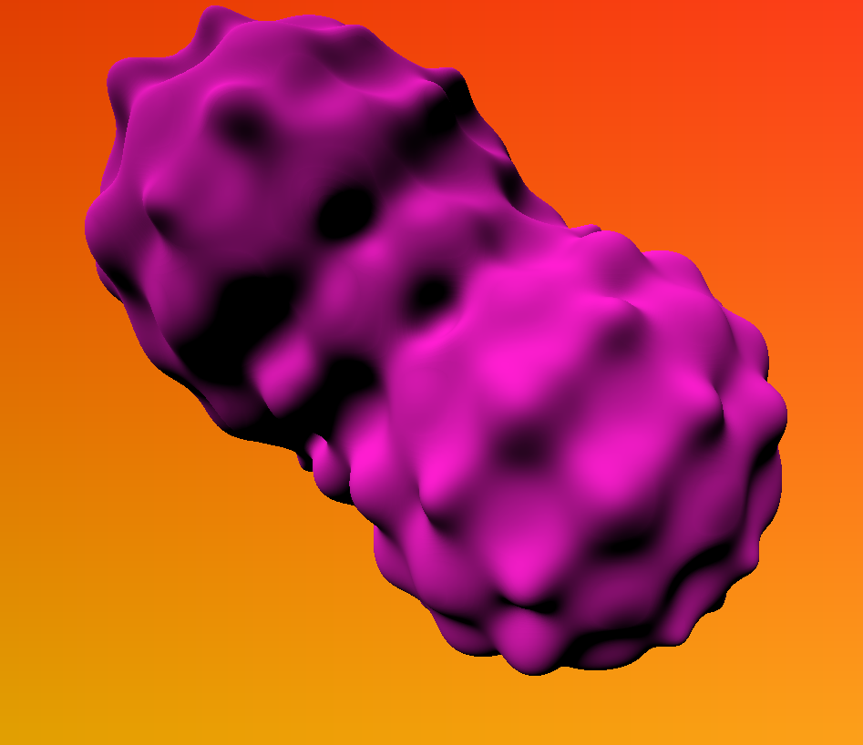
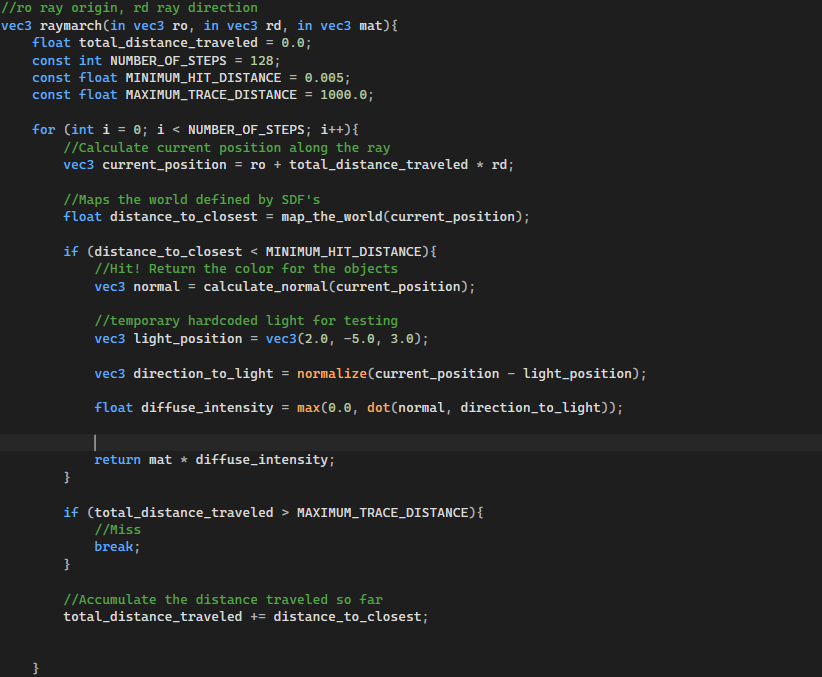
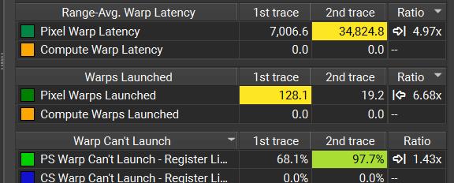
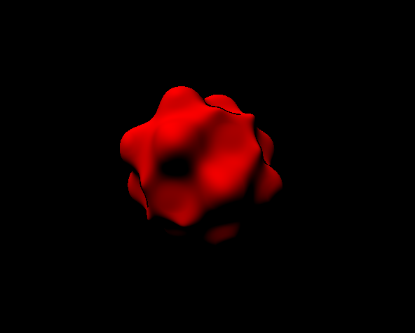

Overview
Raymarcher made following Michael Walczyk tutorial intro to ray marching Program uses openGl to render a single triangle primitive covering the screen with texture coordinates normalized along screen space. Almost all of the magic is happening in the fragment shader, where signed distance funcitons are being used to create 3D worlds out of math. Shoutout Inigo Quilez, Michael Walczyk and many many more people who have documented their adventures in raymarching. Initial openGL basecode taken from Dr Zoe Wood and modified by Aidan Ream for Intro to Computer Graphics 471:
What is raymarching?
Raymarching is a computer graphics technique where you slowly march a ray per fragment or pixel towards a scene defined by signed distance functions (SDFs). SDFs are mathematical functions that define geometry in 3D space, returning a positive value if you are outside of the shape, 0 along the parimeter, and negative values inside of the shape. We can use the mininum result of these functions per ray to find the maximum safe distance we can step per iteration.

Branching in shaders?
Branching is generally considered a preformance tanker when used in shaders. If two function calls within the same shader follow different paths in code excecution, you experience something called warp divergence which *can* be particularly bad for preformance. It makes it so your shader code that is supposed to run simultaniously runs in two seperate warps, essentially eliminating the reason to be using the GPU in the first place. This effect is a tradeoff however, and in the case of raymarching an early exit condition can actually improve preformance, it all depends on the usecase and tradeoffs.

Profiling a version that uses the early exit vs one without using Nsight graphics, we can see that without that condition you have far more misses with the GPU being used for much more undeeded work. The number of warps that fail to launch is a major difference between the two. With the exit condition the GPU is being utilized far more compared to the one without. The efficiancy per frame being drawn is much higher, since each frame is only as fast as the last ray finishes marching.

Playing around with simple SDF world layouts and animation
Using simple sinusodal distortions to the results of the SDFs can produce very cool results.
Future Work
Additional work to be implemented is 3D fractal rendering, SDF modeling, raymarched clouds, and more!
Built with